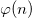
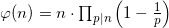
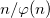

Problem 69 is a really nice one. I looked at it, and immediately it seemed that brute-forcing is not required here. Yeah, Ron, I know it took you 35.671 ms to brute-force it :-), but here's a nicer mathematical solution without programming at all:
A formula to compute  is:

Where p are the distinct primes dividing n. To minimize  we see that n should have as many prime factors as possible, and the smaller they are, the better.
Intuitively, if n has a prime factor p, then every p-th number upto n is not co-prime with n. Therefore, it would be great if every 2nd, 3rd, 5th etc. number were not co-prime with n, this would leave very few numbers that are co-prime with it, thus minimizing .
So, to solve it, find a number that's a multiple of as many small primes as possible and is still less than 1,000,000